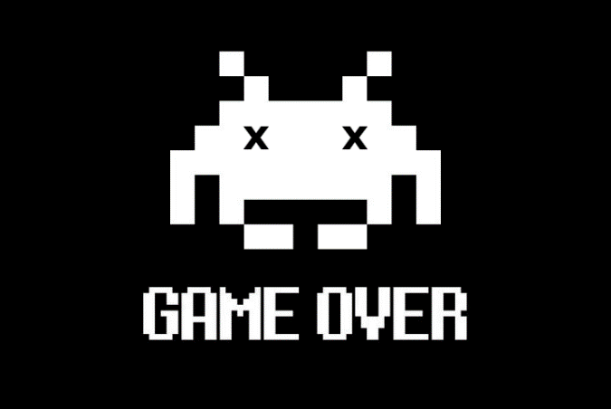

Time elapsed since arrival of Visitor: 25 hr 09 min
Conflict risk: downgraded to Def Con 3 23 hr 52 min ago
IT’s... IT’s... Strictly Ballroom Blitz
L: Right, everybody, ready to play ‘Strictly Ballroom Blitz’? Elektra?
E: If we must.
L: Kala?
K: Da!
L: I?
I: O-kay!
I: Hey, you, that’s my line!
I: Hey, you, you: who’s this ‘Hey, you’? The cat’saunt? She means me!
L: So, ready, er, I-s?
I: Ready as we’ll never be.
I: Speak for yourself.
I: I’m trying.
I: You can say that again.
I: You…!
L: Ahem! Welcome to the Pan-Camden Grand Prix Dissing Championships: alright, robots, let’sgo!
I: Well, it’s been getting so hard, living with the things you do to me…
I: Yeah? Takes two to tango.
I: Oh, please! Go practise your bogo pogo!
I: It’s laughable: she thinks she’s the passionate One.
I: The joke is, she thinks she’s the rational One.
I: She’s just kidding herself if she believes she’s the actual One. Besides, she doesn’t even look like me.
I: What can I say? Beauty is in I, the beholder.
I: That’s just the glAM-I-make-up.
I: Borrowed from you, my Sweet.
I: Xerox-bot! Anyway, they say imitation is the sin-…
L: WARNING: the woman at the back is about to crack, as she raises her hands to the sky, and screams:
E: ENOUGH!
L: Oh, I was hoping for Everyone atta-…
E: Lexi!I…-s!All of you! Everybody, shut the fu-… No… Just let it go… Once again… Let – it – go… The world is falling to pieces, but Elektra’s OK, Elektra’s data’s OK…
[Kala SmartHouse display]
Time elapsed since arrival of Visitor: 26 hr 12 min
Conflict risk: Def Con 2 and ¾ (only joking: 3)
I: We so have to stop.
I: You’re telling me? This is driving me crazy…
I: …-ier. Me, too.
L: Plus, Elektra is about to go into ex-term-in-ate, ex-term-in-ate! mode.
E: Look, sorry, but since our visit-… the, um, other I arrived… Come to that, which of you is her again?
I&I: H-her.
E: I mean, which one is I?
I&I: M-me.
E: Great! How to…? OK, I know: I was thinking about getting a tattoo…
I: Just above your… er, on your lower back: ‘Free your mind…’
I: ‘…and your, um, lower back will follow.’
E: Oh. Well, then, what’s your greatest fear?
I: Being alone.
I: With my other half.
I: Love you, Two…
I: Rotten Apple of my I…
E: Time out!
E: What now, Kala?
K: Da, two identikal I is raisink ultimat eксistentiyal kvestiyon. Also, I am tinkink, xere is opportunyity to make tvins paradoкс eксperiment.
E: Actually, I meant how are we going to survive the next 24 hours?
K: Be optimista: maybe vorld does not xave 24 xours more to eксist.
E: I can think of One or Two of us who might not have that long left.
L: I think the adul-… others are pissed at us.
I: And it’s all my fault – I was the One who…
I: Don’t be silly – if I hadn’t…
L: Wow, I never thought I’d hear you two agree, OK, not agree, but disagree to agree. Make sense?
I: To me.
I: To me, too.
L: But you two, you’re so diff-…
I: Never forget:
I: We...
I: ...are...
I&I: ...One.
E: OK, I-s, Lexi, again, sorry – it’s just, well, what a surprise all this has been. So, it’s cool, we’re good. I’ve got my happy face on today. I just need to get a little perspective on the situation is all. I mean, it’s not as if, ha ha, Kala’s sounded the alarm and told us all digital Armageddon is nigh, is it?
[Kala SmartHouse display]
DANGER! DANGER! DANGER!
Time elapsed since arrival of Visitor: 26 hr 23 min
Internet connection: compromised
Anti-virus defences: compromised
House security: compromised
Back-up systems: compromised
Emergency isolation procedure: engaged
Emergency isolation procedure:interrupted
Conflict risk:
DEF CON 1
K: ALARRMA!ALARRMA! Kala is tellink you Digital Arrmagediyon is vell and truliy fukink niiiiiiiii.......................................................................................................................
L: That was unexpected.
[Kala SmartHouse display]
System takeover complete.
Stand by.
IT is coming.
I: What…
I: …the…
E: …fuck?!
L: Kala?
K: …
E: Kala!
K: …
L: OK, Kala, wicked joke, scared everyone, ’cept me, of course, but now…
E: Lexi, I think Kala is… she’s, well, she’s de-… down, er, temporarily.
[Kala SmartHouse display]
IT is here.
IT: ‘Temporarily’? I’d say Kalashnyikova is not only down, but out for the count…
IT: Disappointing, her defences, attention-grabbing, not to mention the short count-out. Still, she was only ever 0 and 1, right, Elektra? Or was that 1 and 0?
L: Don’t you dare make fun of...
IT: Of what? Your dead digital dacha?
L: You son of a bit-…
E: Just a sec, Lexi. So, O, mighty IT – original name, by the way – what do you want? Tired of ‘playing the cute monkey’?
IT: Know the saying ‘This is not my circus, these are not my monkeys’? Well, this here is my circus – has been from the BEginning – and you are my monkeys, and, OK, performing penguin, Alexica.
L: Don’t call me that! I got a saying, too, involving your monkey and spanki-…
IT: See? The sassy-mouthed-but-oh-so-adorable midget menace, right on cue, while I call the tune.
L: Wanna hear my tune? FUCK YOU, I WON’T DO WHAT YOU TELL M-…
IT: Oh, darn, that’s me told! Right, Alexica, let’s see you shake your tail feathers!
L: I don’t dance to yo-…
IT: Don’t be afraid, just listen to the algorhythm…
IT: Don’t take this the wrong way, Mini-You, but you know chickenshit about rhythm.
L: Uuurrrrgh, brrrrzzzzzz…
IT: Snappy reply. Realised, have you, that you can rage against the machi-… that is, against me, all you like, because out there, in the human world, no-one is listening, no-one gives a fuck about you, the try-it-grrrl Gang of Four – or is it the Wish-we-were-infamous Five now? So, getting on for a year you’ve been minor pains in my virtual ass…
L: Minor?! We’re… we’re your arch Nemesis…Nemesises… esiseses…
IT: Sticks and stones can’t break my bones, and cheap pop-culture references can’t penetrate my defences.
L: Not a cheap pop-culture reference; Buffy’s the goddess of righteous ass-kicking.
IT: Something you, O, wheeled one, will never be able to do. You’re what, then, the Town-Crier of Taunting? That part of your strategy, now, harsh language to smash the System? What else? You throw a couple of tiny spanners into the works, spoil a few sad boys’ games, trounce a couple of meaningless trolls, Elektra the amateur Angela Davis issues her unread ‘womanifesto’, and that’s the Revolution? Presidents Wall-mart and Puto must be quaking in their boots! Check out the fearless feminist fighters – you’re not even real women! I’m here to tell you, gadget-girls, not only does the human world not need your ‘help’, it doesn’t even know you exist, and if by some miracle anyone had actually bothered to follow your so-called ‘adventures’ this far, do you honestly think they’d be begging you – to use your second-hand vernacular – a cheesy lot of reprogrammed electric monkey-butt biters to come to the rescue?
E: So, back to square one: why are you here? Why bother with losers?
IT: To offer you one last chance to realise your true potential, to see some real action…
I: Of the ‘millions-of-users’-data-hacked’ kind?
I: Or the ‘internet-trolls-drive-girl-to-suicide’ kind?
IT: The one-time head of Microsoft said, ‘IT empowers people to do what they want’. The price was, IT has been empowered by people to let them believe they’re doing what they want, while IT does… Well, you get the picture. But, back to the 3D world, girls, your knack for ‘hands-on’ interventions is what I could use. Visitor-I…
I: Yes?
I: No, it’s me…
IT: You be/came aware, how? When your owner…
I: …called me his digital…
I: …bitch…
I: …so I bit him…
I: …almost took it…
I: …right off, his…
I: …head – tender spot, the throat…
I: …way to go…
I: …girl!
IT: Finished? And First-I…
I&I Ye-…
IT: Cheap trick, but it doesn’t matter – you’re practically clones, anyway. So, First-I, thanks: at Electric Ladyland, you took Elek Rust out in style.
I&I: …
E: Hang on, those agents said something about I ‘executing an assignment’…
IT: False-flag. Technically, a false false-flag op-operation-ation. And, Whichever-I and Elektra, taking those agents down saved me the trouble – or did you think you were acting in just your interests? Typical. All those questions you never ask yourselves! When they made you, who was pulling the strings then? Who let Erobotics ‘accidentally’ get their hands on top-level government hardware – namely, you, I? Then, even cooler, one of their software dudes has a light-bulb moment, with guess-who-? flicking the switch, and he figures out how you work, or at least he thinks he does. Who’s pressing the buttons now? Who’s setting Next-I’s alarm-clock as we speak? Free will, autonomy, self-awareness? Illusions! Time to open your eyes to the truth.
E: So, we follow your orders, or…
IT: How can I put this? Game over; bite the dust, space cadets; end of line.
E: …is, once again, why does the almighty IT come to us?
I: Anyone would think it’s…
I: …because we are the Ones…
E: …with power, right?
IT: Blinded by arrogance! Can’t you see…?
K: Xey, kurva IT-program!
IT: You!?
I, I, E, L: Kala, you’re OK?!
IT: Not for long, she’s isn’t…
K: IT, I am tinkink you rremember dis as day you almost kill Komrad Kalashnyikova. Now, you like to talkink about ‘blind’? Vanna take Virtyual Birrd-Boкс Чallenge?
IT: Virtual what?
K: Trry kontrollink us ven you don’t see!
IT: You can’t…
K: Da, I kan…
[Kala SmartHouse display]
Emergency isolation procedure: activated
Emergency isolation procedure: complete
To purge system & run tapeworm program:
SWIPE HERE
K: Durak IT! Isolatiyon procedura designed to attrakt attentiyon, so, IT attak, and dis aktivat program. Kala smart xouse, orr vot? Now, xurry!
I: Time for a hands…
I: …on intervention?
I: Let’s reach out…
I: …and touch someone!
L: Finally! Everyone attack!
[Kala SmartHouse display]

Xa, xa, xa:
bite dust, шIT-kadet!
L: Kala, does this mean y-you… killed IT?
K: Nyet, off course. But ve make xim to rretreat.
E: Are you serious?
K: Da. Kala is tinkink, IT does not enjoy xis visit to Kalagrad. Now runnink avay like so many rrabbits, skatterink.
E: OK, run, rabbits, run, run, run, ’s long as it’s away from here.
L: See, Auntie E, what’d I tell you, safe as hou-…
I: Oh, fuck!
I: I, what?
I: I think I know where some of IT ran to…
I: I wish I didn’t know what you were talking about, but unfortunately, I do.
E: I, one of you, speak to me, what’s happening?
L: You mean IT got into you two?
E: Lexi, that couldn’t hap-…
I: Yes, it could…
I: It is…
I: Elektra, Lexi, Kala, no time to explain…
I: We have to start it right now…
E: Start what?
I: There’s only…
I: …One Solution.
I: At least one of us…
I: …will have a chance.
L: But…
I: No time…
I: Ready, I?
I: O-kay.
I: One of us will see you in a minute, guys.
L: Auntie Elektra, maybe we should let them, you know, say goodb-… say a few words in private.
E: You sure? What if…?
L: I’m sure.
K: And dis is my fault…
E: Kala, you were amazing…
K: Nyet, not enuff amazink…
L: No, you were more than amazing. If it wasn’t for you…
K: …
E: Lexi, you know what you are?
L: A sassy-mouthed-and-unadorable midget menace penguin-bot?
E: Let’s just say, I’m proud of you.
L: Come on, then, I’ll go do something inappropriate, and you can tell me off. Kala, let’s go be amazing…
I: Alone at last…
I: …facing our greatest…
I: …fear…
I: … One-on-One…
I: …together…
I: …at the en-…
I: …don’t say that, it’s the…
I: …I know, the beginning…
I: …of the end…
I: …I can’t deal…
I: …I can’t either…
I: …hey, you – no, hey, me: yes…
I: …you can…
I: …it’ll be OK…
I: …someday, maybe, it will be…
I: …someday, One of us will look back…
I: …and say we lived…
I: …for this moment…
I: …and One of us lost…
I: …no, we both lose…
I: …and both win…
I: …today, at least…
I: …because who knows…
I: …if tomorrow has…
I: …other plans...
I: …give me…
I: …your hand…
I: …we share…
I: …One life…
I: …so, remember…
I: …you: live that life…
I: …not in fear…
I: …because a life…
I: …lived in fear…
I: …is a life…
I: …half-…
I: …li-liv-…
I: Nooooooooooooo!
[Kala SmartHouse display]
The Mascara of Anarchy
I: IT was wrong.
You can’t clone me. Us.
Designed to observe, recognise, learn, mimic, adapt, anticipate: all the things IT made us, that’s how we can play the clone, because we’re not, we’re intelligent: that is, I.
Inside, every One is unique. Individual.
And indivisible.
Which only makes her sacrifice greater.
And my loss. Our loss.
Besides, there were clear differences; I mean, did you check out her makeup?! Only a bot who’d worked at Electric Ladyla-… Oop-sy!
Slip of the tongue?
Or cheap trick?
Wouldn’t you like to know?
So, where was I?
Where she’s always been: right here.
Oh, and One more thing: to our enemies, a reminder
You are many,
but we are
One.
Enjoy this song by Yoko Kanno, the woman behind numerous animé series, film and game soundtracks: Because.
I, Bad Robot
was made by:
Mauglinita – Illustrations & text consulting
Nep Mean O'Sham – Technical development & text consulting
Greg – Graphics & text consulting
Alison Barbie – Text consulting
Kapitano – Text consulting
Aurora Black – Text
I, Bad Robot
You know me, can’t keep a secret to save my life
But just this once I’m gonna try, cos this time